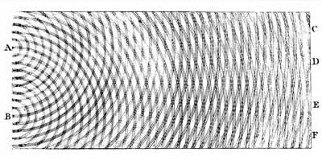
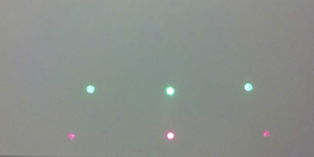
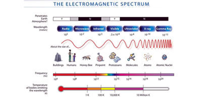
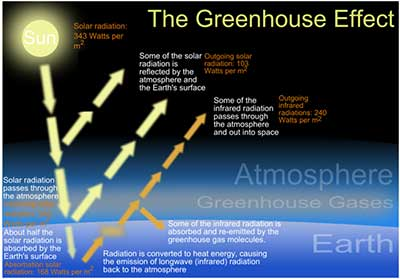

Spectroscopy is the study of light produced from various sources. Light is both a particle and a wave, or better yet, light has both wave properties and particle properties. In spectroscopy we are only dealing with light's wave properties. By splitting the light up into different colors it is possible to get information about the source of the light. Even a light source that appears to be producing only one color can in reality be a combination of several at once.
To study light through spectroscopy you must first break down a light source into its various colors. Think of the rainbows seen when light passes through a prism. This is one way to split light into its various colors, but not so easy to carry around and attach to your phone's camera. Luckily it is also possible to use a diffraction grating. A diffraction grating is a piece of film made up of many, many small slits.
When light passes through a bunch of slits, it spreads out and interacts with itself creating bright and dark spots. You may have heard that light always goes in a straight line, although, when light encounters an obstacle that is really small, only slightly larger than the wavelength of light, it will spread out as it passes the obstacle just like water flowing through a small slit. This is called diffraction. When there are two slits close together the resultant waves interact with each other as they spread out. When two waves come together they add up to make a resultant wave. If the two waves have crests and troughs at the same points, they add up to make a wave that is twice as big as the two individual waves. This is called "constructive interference." When two waves have crests and troughs at the same points they are said to be "in phase." If two waves are completely "out of phase" which means one wave is up while the other is down, they cancel each other out. This is called "destructive interference."

Diagram representing light waves passing through two slits and creating constructive and destructive interference.
The spacing of the bright and dark spots depends on the wavelength of the light and different colors of light have different wavelengths. This is the reason why when sunlight passes through a prism or diffraction grating the colors split into a rainbow. It is creating light and dark spots at different locations depending on the color of the light.

Green and red laser passing through a diffraction grating. The grating spreads the red light out more than the green light.
Light passing through slits actually creates more than one full spectrum. This is what causes the phenomenon that got Paul Vasquez so excited, the "double rainbow." For this app it is best to contain your excitement and cut out the second rainbow to more easily compare your spectrum to the examples.
Spectrometer: A device that measures the intensity of the different wavelengths of light. Because different elements produce different wavelengths, spectrometers can be used to see what elements are in a specific sample.
Spectroscopy: The study of light by splitting it up into its component wavelengths.
Spectroscope: A device that splits light into its different wavelengths. This is what you make and attach to your phone to use this app.
Wavelength: The distance from one wave peak to the next.
Diffraction: When light goes around an obstacle or through a single slit the light rays interact with each other. When they do, a pattern of dark and bright spots is created.
Interference: When light passes through two slits and the light rays from each of the slits interact. It is like diffraction but involves more than one slit or obstacle.
Constructive Interference: When two waves come together and make a bigger wave
Destructive Interference: When two waves come together and cancel each other out
In Phase: When two waves are going up and down together
Out of Phase: When one wave is going up as the other is going down
The colors that can be seen are really only part of the story. Only a small range of wavelengths can be seen by the human eye. Just because we can't see wavelength beyond that doesn't mean they aren't there. Microwaves and radio waves are really the same as visible light just with different wavelengths. Together, these wavelengths make up the Electromagnetic Spectrum. The energy carried by the waves is different depending on the wavelength. The smaller the wavelength the greater its energy. For a neat experiment demonstrating this see Experiment 4 of Spectra: The Original Laser Superhero.

Image courtesy of NASA
The sun produces light just beyond the visible spectrum commonly called ultraviolet and infrared radiation. Ultraviolet (UV) rays are just beyond the violet end of the visible spectrum. These have higher energy than regular violet light which is why they can burn your skin. On the other end of the spectrum is infrared (IR). This type of light is associated with heat.
The fact that the sun creates such a variety of wavelengths leads to the greenhouse effect. Shorter wavelengths can easily pass through the earth's atmosphere but the longer IR rays can't pass through as easily. The greenhouse effect happens when shorter wavelength radiation from the sun heats up the earth, then the earth re-radiates with IR radiation. The longer wavelength IR can't pass through the gasses in the atmosphere the way the shorter wavelengths can, so the heat gets trapped. Because heat from the sun continues to heat up the earth and the earth then heats up gasses in the atmosphere, things can keep getting hotter. It is particularly difficult for IR radiation to pass through Carbon Dioxide which is why it considered a "greenhouse gas."

Image courtesy of ZooFari
If the camera you are using was able to pick up IR radiation, you would see lines just past the red. Depending on the type of camera you are using this may be possible. Most quality cameras have an IR filter that blocks out IR radiation so that the colors of visible light are more radiant. However, cheaper cameras don't use such a filter and sometimes it is possible to see IR. Instead of taking a picture of a normal light source, use SpectraSnapp to take a picture of a remote control while you are pressing a button to see what happens!